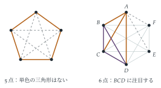

STEP I 1989、第4問
先に進む前に問題を読んでおこう。問題は STEP Support Programme の問題データベースにある： step.maths.org/questions/89-s1-q4
導入
6人が集まるパーティーでは、互いに全員が知り合いである3人か、互いに全員が見知らぬ者同士である3人が必ず存在する。これは6人が誰であっても保証される。5人ではこれは保証されない。このささやかな事実はラムゼーの定理（Ramsey’s theorem）の最初の場合であり、現代の組合せ論（combinatorics）を貫く原理を捉えている。すなわち、完全な無秩序は不可能である。十分に大きな構造は、どのように色を塗られ、どのように配置されていようとも、高度に秩序立った部分を必ず含むのである。
証明はわずか4行で済む。しかし、自然に浮かぶ次の問い（互いに知り合いである4人か、互いに見知らぬ4人を保証するには何人必要か。5人ならどうか）は、数学で最も難しい未解決問題のいくつかにつながっている。
取りかかる前に
6個の点が意味をもつのは、どの2点の組がどの色で結ばれているかという点だけであり、幾何学的な配置は目くらましにすぎない。線分は全部で何本あり、各点からは何本出ているか。
線分は \(\binom{6}{2} = 15\) 本あり、各点からは \(5\) 本ずつ出ている。（一般の位置（general position）にあるという条件は、どの3点も本物の三角形をなすことを保証しているにすぎない。この問題は実際には、6頂点の完全グラフ（complete graph）\(K_6\) の辺（edge）を2色で塗り分ける問題である。）
順を追って解く
段階 1 5本の線分と2つの色
\(A\) からは5本の線分が出ており、それぞれ金色か銀色である。それらの色について確実にいえることは何か。
少なくとも3本は同じ色である。もし金色が高々2本、銀色も高々2本であれば、線分は高々4本しかないことになる。これが鳩の巣原理（pigeonhole principle）である。5個の物を2つの箱に入れると、ある箱には少なくとも3個が入る。（必要なら色の名前を入れ替えて）\(AB\)、\(AC\)、\(AD\) がすべて金色であるとしよう。
段階 2 反対側の端に目を向ける
次に三角形 \(BCD\) を見よ。その辺のうちどれか1本でも金色であったらどうなるか。1本も金色でなかったらどうなるか。
三角形 \(BCD\) のある辺、たとえば \(BC\) が金色であれば、\(ABC\) は3辺 \(AB\)、\(AC\)、\(BC\) がすべて金色となる。\(BCD\) のどの辺も金色でなければ、\(BC\)、\(CD\)、\(DB\) はすべて銀色であり、\(BCD\) は銀色の三角形となる。いずれにしても単色の三角形が存在する（図 9.2.1 右）。■
段階 3 5点では足りない
5点の場合、各点から出る線分は4本しかない。各点がちょうど2本ずつ各色の線分をもつように色を塗るにはどうすればよいか。
5点を正五角形の頂点に置く（一般の位置にしたければ、平面から少しだけ持ち上げればよい）。五角形の5本の辺を金色に、5本の対角線を銀色に塗る（図 9.2.1 左）。金色の辺は長さ5の閉路（5-cycle）をなし、三角形を含まない。銀色の辺は五芒星（pentagram）をなすが、これもまた長さ5の閉路であり、三角形を含まない。したがって単色の三角形は存在しない。■

振り返り
無関係なものを取り除く。空間内の点は色付きのグラフになった。意味をもったのは辺の色だけである。
鳩の巣原理。5本の辺と2つの色から、同じ色の辺が3本あることが導かれた。
適切な対象での場合分け。金色の辺が3本見つかれば、その反対側の端がなす三角形がすべてを決着させた。
最良性。五角形の例は、6という数をそれ以上小さくできないことを示している。よい定理には、それが最良であることを示す例が伴うものである。
背後にある数学
ラムゼー数
ラムゼー数（Ramsey number）\(R(s, t)\) とは、\(K_N\) の辺を金色と銀色でどのように塗り分けても、金色の \(K_s\)（\(s\) 個の点からなる集合で、それらの間の辺がすべて金色であるもの）か銀色の \(K_t\) が必ず含まれるような最小の \(N\) のことである。この問題は \(R(3, 3) = 6\) を示したことになる。6点では必ず成り立ち、五角形の例は5点では成り立たないことを示している。
フランク・ラムゼー（Frank Ramsey）は1928年に、これらの数が常に存在すること、すなわち任意の \(s\) と \(t\) に対して条件を満たす \(N\) が存在することを証明した。その証明は上の議論を一般化した帰納法（induction）であり、\(R(s, t) \leq R(s - 1, t) + R(s, t - 1)\) を示すものである。しかし、正確な値を求めることは途方もなく難しい。 \[R(3, 3) = 6, \qquad R(4, 4) = 18, \qquad 43 \leq R(5, 5) \leq 46.\] \(R(4, 4)\) の値は1955年に求められた。膨大なコンピュータ探索にもかかわらず、\(R(5, 5)\) はいまだに分かっていない。上界（upper bound）\(46\) が証明されたのは、ようやく2024年のことである。コンピュータで \(K_{43}\) のすべての塗り分けを単純に調べることはできない。塗り分けは \(2^{903}\) 通りあり、宇宙に存在する原子の数よりはるかに多いのである。
ラムゼー理論の発展に誰よりも貢献したポール・エルデシュ（Paul Erdős）は、次のような話を好んで語った。宇宙人が地球に侵攻してきて、\(R(5, 5)\) の値を教えなければ地球を滅ぼすと脅したとしよう。そのときは、あらゆるコンピュータと数学者を総動員すべきであり、そうすれば値が見つかるかもしれない。しかし、もし彼らが \(R(6, 6)\) を求めてきたら、宇宙人を滅ぼすことを試みるべきだ、と。エルデシュはまた1947年に、驚くべき方法を用いて \(R(k, k) > 2^{k/2}\) を証明した。彼は、\(2^{k/2}\) 個未満の点の上でランダムに色を塗ったグラフが単色の \(K_k\) を含まない確率が正であることを示したのである。したがって、どのように構成すればよいかは誰にも分からないにもかかわらず、条件を満たす塗り分けが存在しなければならない。この確率的方法（probabilistic method）は、今日では組合せ論における最も強力な道具の一つとなっている。
混沌からの秩序
ラムゼーの定理には多くの親戚があり、どれも同じ考え方、すなわち十分に大きな構造は秩序を避けられないという考え方を表している。ファン・デル・ヴェルデンの定理（van der Waerden’s theorem）は、整数を有限個の色で塗り分けると、いくらでも長い単色の等差数列（arithmetic progression）が存在することを述べている。エルデシュ–セケレシュの定理（Erdős–Szekeres theorem）は、相異なる \(n^2 + 1\) 個の数からなる任意の数列が、長さ \(n + 1\) の増加部分列または減少部分列（subsequence）を含むことを述べている。そしてラムゼー自身は論理学の問題に関心をもっていた。彼はこの定理を、論理的な命題の真偽の判定に関する論文の中で、補題（lemma）として証明したのである。
思考のスキル
\(kn\) 個より多くの物を \(n\) 個の箱に入れると、ある箱には \(k\) 個より多くの物が入る。
この原理は自明であるが、うまく使うのは一つの技芸である。腕の見せどころは、何を物とし、何を箱とするかの選び方にある。ここでは、1点から出る5本の辺が物であり、2つの色が箱であった。大学では、鳩の巣原理による議論は、整数論（無理数の分数による近似）、解析学（ボルツァーノ–ワイエルシュトラスの定理（Bolzano–Weierstrass theorem））、そして組合せ論の至るところに現れる。
次の一歩
少なくとも2つ。\(K_6\) の任意の2色による塗り分けにおいて、実は単色の三角形が少なくとも2つ存在することを示せ。（ヒント：「二色の角」、すなわち共通の頂点で色の異なる2辺の組を数えよ。金色の辺を \(g\) 本、銀色の辺を \(5 - g\) 本もつ点は、このような角 \(g(5 - g) \leq 6\) 個の頂点となっている。単色でない三角形はそれぞれ、このような角をちょうど2つ含む。）
3色。\(K_{17}\) の辺を3色で塗り分けると、単色の三角形が存在することを示せ。（ヒント：ある点は同じ色の辺を少なくとも6本もつ。）
3と4。\(R(3, 4) \leq 10\) を示せ。すなわち、\(K_{10}\) を金色と銀色でどのように塗り分けても、金色の三角形か銀色の \(K_4\) が存在することを示せ。（ヒント：各点は、金色の辺を少なくとも \(4\) 本もつか、銀色の辺を少なくとも \(6\) 本もつかのいずれかである。）実際には \(R(3, 4) = 9\) である。
単調部分列。\(n = 2\) の場合のエルデシュ–セケレシュの定理を証明せよ。すなわち、相異なる \(5\) 個の数からなる任意の数列は、長さ \(3\) の増加部分列または減少部分列を含むことを示せ。また、どちらも含まない \(4\) 個の数からなる数列を求めよ。
さらに学ぶために
Miklós Bóna, A Walk Through Combinatorics（World Scientific）。鳩の巣原理とラムゼー理論の章。
Ronald Graham & Joel Spencer, 「Ramsey theory」, Scientific American（1990年7月）。第一線の研究者2人による一般向けの入門記事。
Noga Alon & Joel Spencer, The Probabilistic Method（Wiley）。エルデシュの方法に関する標準的な本。第1章は取り組みやすい。
Paul Hoffman, The Man Who Loved Only Numbers（Fourth Estate）。エルデシュの伝記（邦訳『放浪の天才数学者エルデシュ』）。